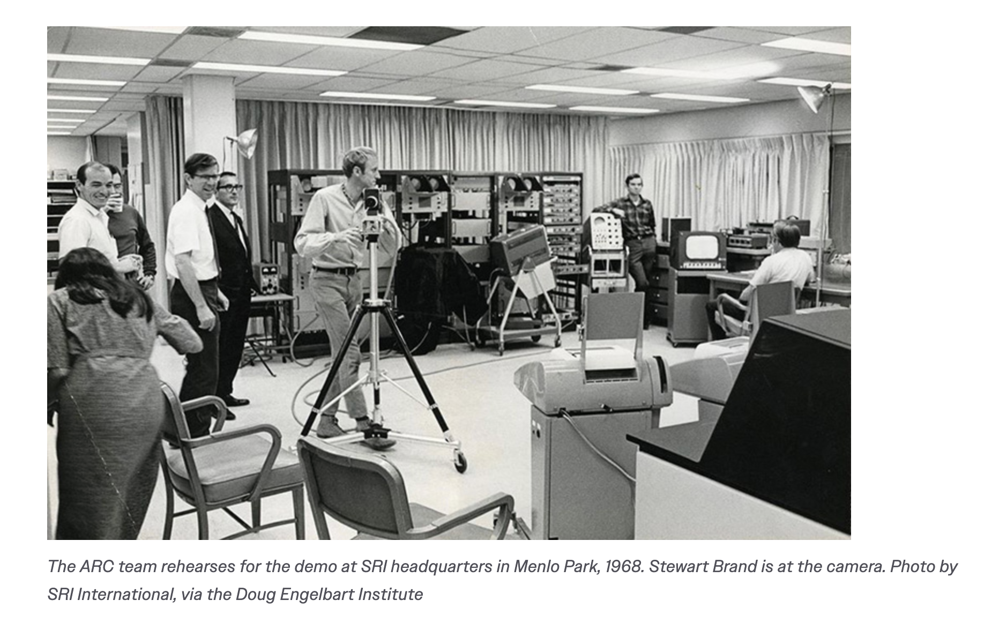
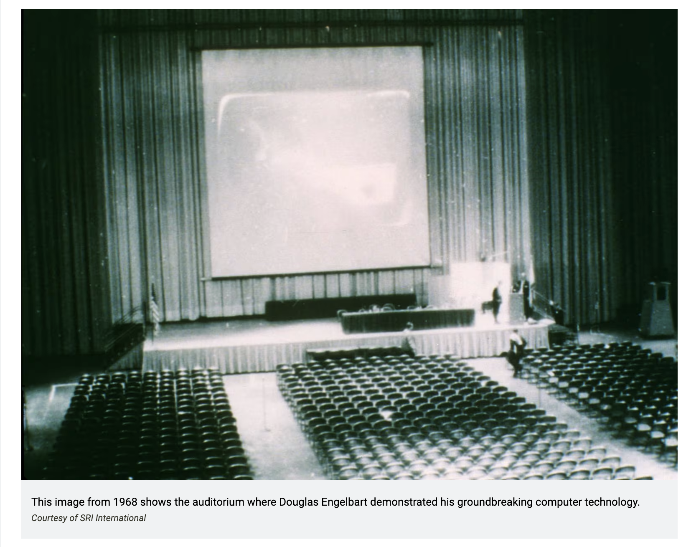
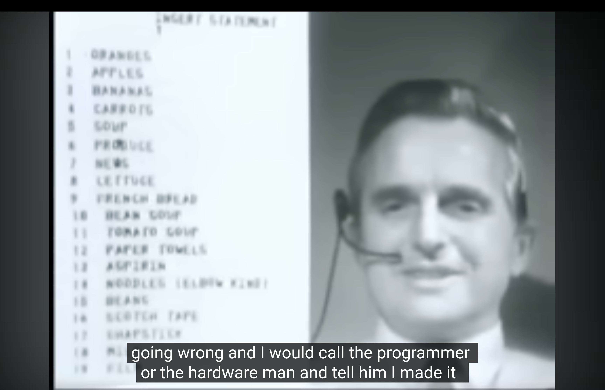
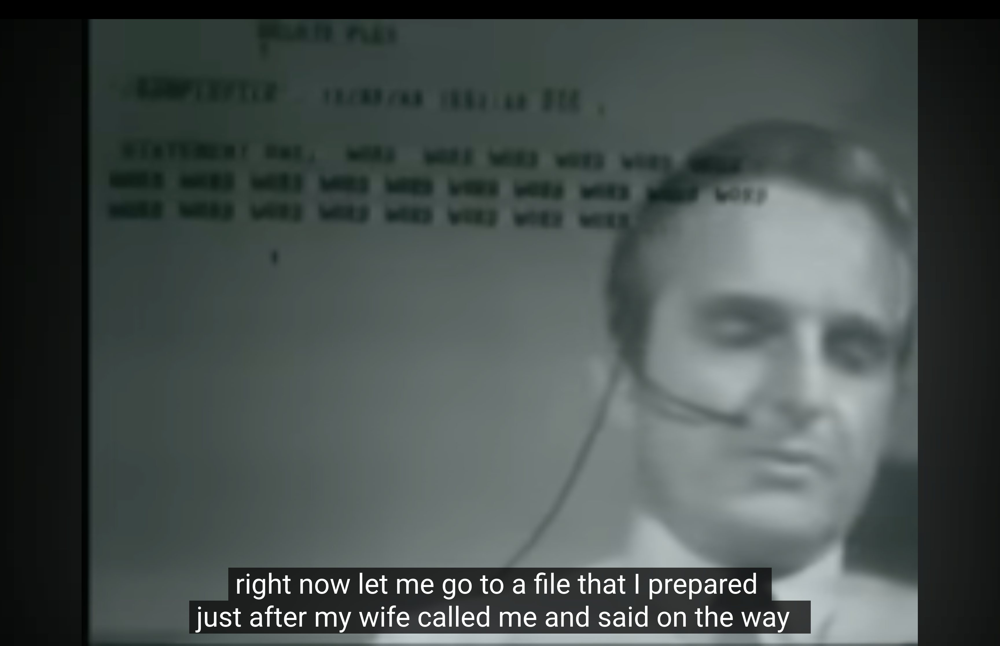
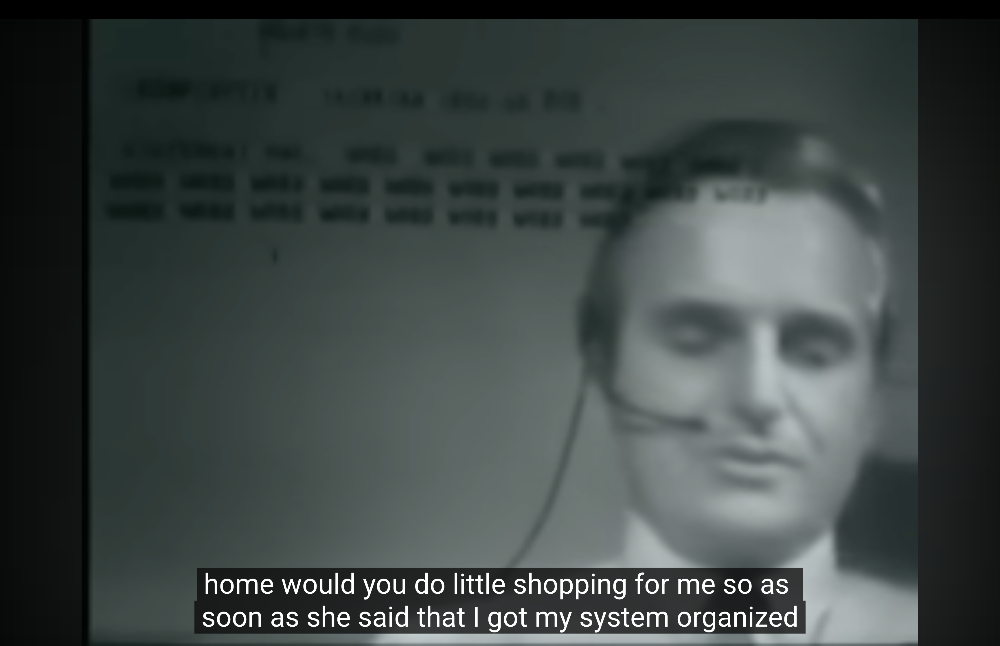
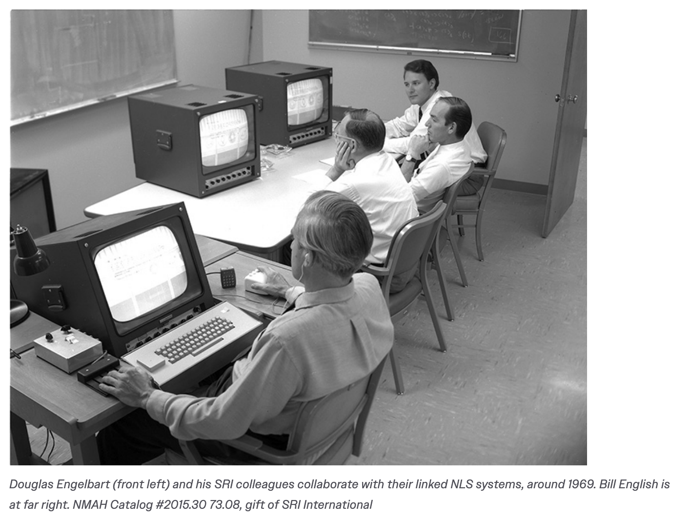

⚠️ It's called "The Mother of All Demos" — but no women were credited.
The 17-person research team at SRI was entirely male. The only woman mentioned in the entire 90-minute presentation is Engelbart's wife — and she appears solely because she asked him to pick up groceries. He used her shopping list as the demo data for the system that changed computing history. Bananas. Carrots. Aspirin. Paper towels. Her domestic labor became the raw material of the future. The "mother" in the title is rhetorical. The actual mothers were elsewhere — uncredited, unseen, and carrying the weight that made the demo possible.
✦ Archive Images · Place files in /images/ folder

▦01.png
01

▦02.png
02

▦03.png
03

▦04.png
04

▦05.png
05

▦06.png
06
✦ Watch First · The Mother of All Demos · Dec 9, 1968
✦ Ask a Question · Everyone Sees the Same Answers · Showing Last 3